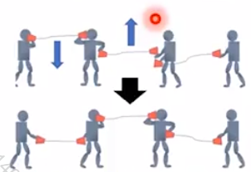
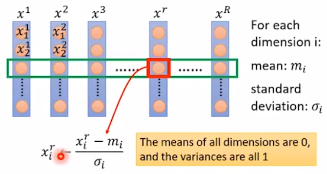
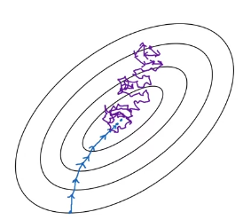
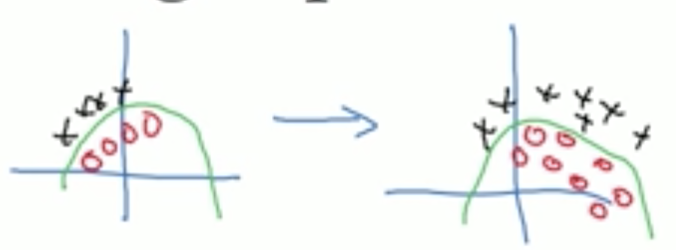

批标准化~{cite?}是优化深度神经网络中最激动人心的最新创新之一。 实际上它并不是一个优化算法，而是一个自适应的重参数化的方法，试图解决训练非常深的模型的困难。
1. 非常深的网络存在的问题
非常深的模型会涉及多个函数或层组合。
在其他层不改变的假设下，梯度用于如何更新每一个参数。
在实践中，我们同时更新所有层。
[success]
w更新算法是在假设其它层w不变的情况下计算某一层的的。
但实际上所有w会同时更新。
相邻层之间w的相互作用对最终结果有比较大的影响。

当我们进行更新时，可能会发生一些意想不到的结果，这是因为许多组合在一起的函数同时改变时，计算更新的假设是其他函数保持不变。
举一个简单的例子，假设我们有一个深度神经网络，每一层只有一个单元，并且在每个隐藏层不使用激活函数：。
此处，表示用于层的权重。层的输出是。
输出是输入的线性函数，但是权重的非线性函数。
假设我们的代价函数 上的梯度为，所以我们希望稍稍降低。
然后反向传播算法可以计算梯度。
想想我们在更新时会发生什么。
近似的一阶泰勒级数会预测的值下降。
如果我们希望下降，那么梯度中的一阶信息表明我们应设置学习率为。
然而，实际的更新将包括二阶，三阶，直到阶的影响。
的更新值为
这个更新中所产生的一个二阶项示例是 。 如果 很小，那么该项可以忽略不计。而如果层到层的权重都比大时，该项可能会指数级大。 这使得我们很难选择一个合适的学习率，因为某一层中参数更新的效果很大程度上取决于其他所有层。 二阶优化算法通过考虑二阶相互影响来解决这个问题，但我们可以看到，在非常深的网络中，更高阶的相互影响会很显著。 即使是二阶优化算法，计算代价也很高，并且通常需要大量近似，以免真正计算所有的重要二阶相互作用。 因此对于的情况，建立阶优化算法似乎是无望的。 那么我们可以做些什么呢？
2. 引入批标准化方法
[success] 标准化
根据算法的过程应该是标准化，中文翻译也确实是标准化，但是英文用的却是Normalize，挺奇怪的。
批标准化提出了一种几乎可以重参数化所有深度网络的优雅方法。
重参数化显著减少了多层之间协调更新的问题。
批标准化可应用于网络的任何输入层或隐藏层。
[success]
BN用于输入层，即对X做标准化。
BN用于隐藏层，即对每一层的a或者z分别做标准化。
设是需要标准化的某层的小批量激活函数，排布为设计矩阵，每个样本的激活出现在矩阵的每一行中。
[success]
这里是不是翻译有问题，H不是一个函数，而是一个值。
H可以是计算出来的z或者a。
Ng建议是对z做batch norm，没有解释原因。
为了标准化，我们将其替换为
其中是包含每个单元均值的向量，是包含每个单元标准差的向量。 此处的算术是基于广播向量和向量应用于矩阵的每一行。
在每一行内，运算是逐元素的，因此标准化为减去再除以。
[success]

网络的其余部分操作的方式和原网络操作的方式一样。
2.1. 训练阶段
在训练阶段，
和
其中是个很小的正值，比如，以强制避免遇到的梯度在处未定义的问题。 至关重要的是，\emph{我们反向传播这些操作}，来计算均值和标准差，并应用它们于标准化。
[success]
是H的均值。是H的方差。是所有值与均值的平方和。
用于防止分母为0
，这样得到的是均值为0方差为1的分布
但有时候，希望将z标准化为特定的均值和方差，因此进一步计算：
这里面的和不是超参数，而是参数，可以用GD学到。
这意味着，梯度不会再简单地增加的标准差或均值；标准化操作会除掉这一操作的影响，归零其在梯度中的元素。
[warning] [?] 这一段看不懂
这是批标准化方法的一个重大创新。 以前的方法添加代价函数的惩罚，以鼓励单元标准化激活统计量，或是在每个梯度下降步骤之后重新标准化单元统计量。 前者通常会导致不完全的标准化，而后者通常会显著地消耗时间，因为学习算法会反复改变均值和方差而标准化步骤会反复抵消这种变化。
[warning] 后者和现在的方法有什么区别？后者是在前向传播的过程中做标准化，而现在的方法是在反向传播中做标准化？
批标准化重参数化模型，以使一些单元在定义上就总是标准化的，巧妙地回避了这两个问题。
2.2. 测试阶段
在测试阶段，和可以被替换为训练阶段收集的运行均值。 这使得模型可以对单一样本评估，而无需使用定义于整个小批量的和。
[success]
训练时，批标准化公式中所使用的均值和方差都是基于一个batch计算的。
但在测试阶段，如果只有一个测试用例，怎么批标准化？
答：训练过程每个mini-bacth都会计算出一个均值和方差。整个迭代过程会得到均值序列和方差序列。基于这组序列做指数衰减平均得到整个训练样本的均值和方差。使用这个均值和方差对测试样本做标准化。
看来用ewa求平均是很common的方法啊。
3. 效果
3.1. 优点：更易学习
回顾例子，我们看到，我们可以通过标准化很大程度地解决了学习这个模型的问题。 假设采样自一个单位高斯分布， 那么也是来自高斯分布，因为从到的变换是线性的。 然而，不再有零均值和单位方差。 使用批标准化后，我们得到的归一化恢复了零均值和单位方差的特性。 对于底层的几乎任意更新而言，仍然保持着单位高斯分布。 然后输出可以学习为一个简单的线性函数。 现在学习这个模型非常简单，因为低层的参数在大多数情况下没有什么影响；它们的输出总是重新标准化为单位高斯分布。 只在少数个例中，低层会有影响。 改变某个低层权重为，可能使输出退化；改变低层权重的符号可能反转和之间的关系。 这些情况都是非常罕见的。 没有标准化，几乎每一个更新都会对的统计量有着极端的影响。 因此，批标准化显著地使得模型更易学习。
批标准化的优点：
（1）使学习更快。由于没有Covariate Shift问题，因为可以使用比较大的learning rate
（2）使网络更深
（3）less梯度消失/爆炸问题，对sigmoid类的激活函数尤其有效。
（4）受初始化的影响变小
（5）有一点点对抗overfitting的效果（顺便的作用）。
[success] Ng补充：为什么BN能加速训练
原因一：

让所有维度的输入数据（输入层的X或者隐藏层的z）都处于同一scale，缓解“不同维度lr不同”的问题，不用因为照顾某一维度而把lr调低。因此能够speed up training。
原因二：
it makes weight in later deep layer(例如第10层) more rebunst to changes to weight in earlier layers(例如第0层)
先解释一下Covariate Shift。举个例子，用左图的训练数据训练的模型来预测右图的数据，预测结果肯定不好。这是因为数据分布发生的迁移。

当映射X->y中的X变化时，需要重新训练算法，就是Covariate Shift。
Covarite Shift是怎么影响NN的？
在一个深层网络中，假设某一层的输出是a，在这一轮的参数调整中，l+1层到L层的参数调整目标是致力于拟合a到的映射.可是当这些参数调整好以后却发现a已经变了，a与之间的映射也变了。因此已经调好的参数又要重新调整。
为什么BN能消除Covariate Shift？
BN所做的，是减少a的分布。上一层的输出即这一层的输入。如果不对上一层的结果做批标准化，这一层的输入会变化范围很大。因此这一层的效果会受到很大的影响。如果a的变化在一定范围内，就可以减少上一层a的变化对下一层的影响。那么这一层的效果也会比较稳定。同时减少后面层的参数调整对前面层的依赖，因此层之间会更加独立。 ‘ 原因三（弱）： mean/variance是基于一个mini-batch计算的，这会引入z的噪声。有时候噪声是一种好事，它有正则化的效果，就像dropout一样。batch_size越大，引入的噪声越小。
3.2. 缺点：底层网络没有用
在这个示例中，容易学习的代价是使得底层网络没有用。
[warning] 使得底层网络没有用?
在我们的线性示例中，较低层不再有任何有害的影响，但它们也不再有任何有益的影响。 这是因为我们已经标准化了一阶和二阶统计量，这是线性网络可以影响的所有因素。 在具有非线性激活函数的深度神经网络中，较低层可以进行数据的非线性变换，所以它们仍然是有用的。 批标准化仅标准化每个单元的均值和方差，以稳定化学习，但允许单元和单元之间的关系，以及单个单元的非线性统计量之间的关系发生变化。
由于网络的最后一层能够学习线性变换，实际上我们可能希望移除一层内单元之间的所有线性关系。
[warning] 移除一层内单元之间的所有线性关系?
[warning] 后面全部没看懂？
事实上，这是~{Desjardins2015}中采用的方法，为批标准化提供了灵感。 令人遗憾的是，消除所有的线性关联比标准化各个独立单元的均值和标准差代价更高，因此批标准化仍是迄今最实用的方法。
4. 批标准化的改进
标准化一个单元的均值和标准差会降低包含该单元的神经网络的表达能力。 为了保持网络的表现力，通常会将批量隐藏单元激活替换为，而不是简单地使用标准化的。 变量和是允许新变量有任意均值和标准差的学习参数。 乍一看，这似乎是无用的——为什么我们将均值设为，然后又引入参数允许它被重设为任意值？ 答案是新的参数可以表示旧参数作为输入的同一族函数，但是新参数有不同的学习动态。 在旧参数中，的均值取决于下层中参数的复杂关联。 在新参数中，的均值仅由确定。
[success]
例如sigmoid Unit会希望均值是0.5，同时方差不要太大，这样可以充分利用sigmoid函数近似线性的区间。
这里面也是对隐藏层做BN和对输入层做BN的区别。
使用和主要是因为activation可以对z的分布有倾向。而输入层没有activation，因此输入层的BN都是均值为0方差为1.
新参数很容易通过梯度下降来学习。
大多数神经网络层会采取的形式，其中是某个固定的非线性激活函数，如整流线性变换。 自然想到我们应该将批标准化应用于输入还是变换后的值。 {Ioffe+Szegedy-2015}推荐后者。 更具体地，应替换为的标准化形式。 偏置项应被忽略，因为参数会加入批标准化重参数化，它是冗余的。
[success] 因此不管怎么偏置，归一化之后都没有意义了。
一层的输入通常是前一层的非线性激活函数（如整流线性函数）的输出。 因此，输入的统计量更符合非高斯分布，而更不服从线性操作的标准化。
\chap?所述的卷积网络，在特征映射中每个空间位置同样地标准化和是很重要的，能使特征映射的统计量在不同的空间位置，仍然保持相同。
[success] 流程总结